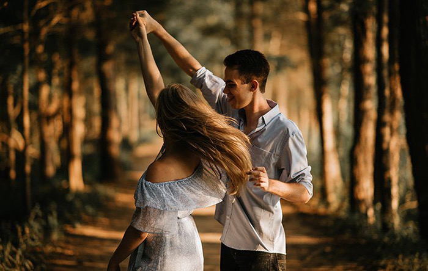

Estudiosos avaliaram passarinhos formam casais para a vida toda e os resultados mostram que a escolha de um par impactou até mesmo na sobrevivência dos filhotes Por Dr. Ricardo Afonso Teixeira* As pessoas paqueram, apaixonam-se, namoram, ora são aceitas, ora são rejeitadas, até encontrarem uma parceria que julgam ser a mais acertada para viverem juntos, terem filhos, etc. Isso costuma ser um processo longo e cauteloso e poucos vão dizer que é uma perda de tempo e energia. Para a perpetuação da espécie seria mais econômico paquerar e procriar sem toda essa experimentação? A espécie precisa mesmo do amor romântico? Os passarinhos podem nos ajudar a responder. Ornitólogos do Instituto Max Planck na Alemanha demonstraram resultados de experiências com passarinhos que têm parcerias parecidas com as de muitos humanos: costumam escolher um(a) companheiro(a) e seguem toda a vida juntos e dividem o trabalho da criação dos filhotes. Eles estudaram 160 passarinhos e promoveram uma paquera inicial entre grupos de 20 fêmeas que podiam escolher livremente um macho em um grupo de 20 também. Depois que os pássaros formavam casais eles eram divididos em dois grupos: casais que se entenderam espontaneamente e casais que foram separados pelos pesquisadores que em seguida eram forçados a novas parcerias. Os resultados não deixam dúvida que a escolha espontânea faz a diferença. Os filhotes de passarinhos que continuaram com seus pares espontâneos tinham 37% mais chances de sobreviver nos primeiros dias de vida, provavelmente reflexo do cuidado dos pais. Não houve diferença na mortalidade dos embriões entre os dois grupos, o que sugere que a atração pelo outro não é uma escolha pela melhor genética, mas atração por atributos comportamentais que favorecem a complementariedade.
